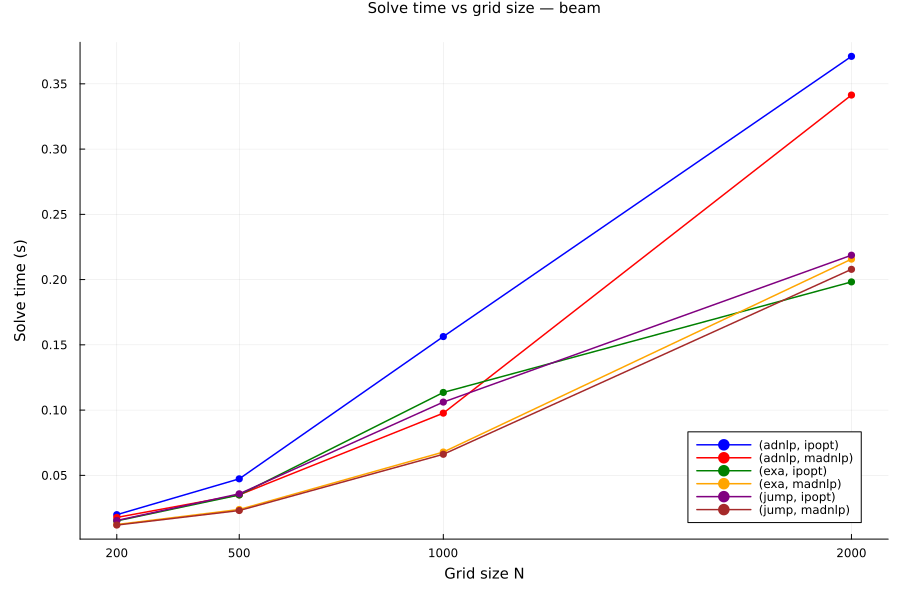
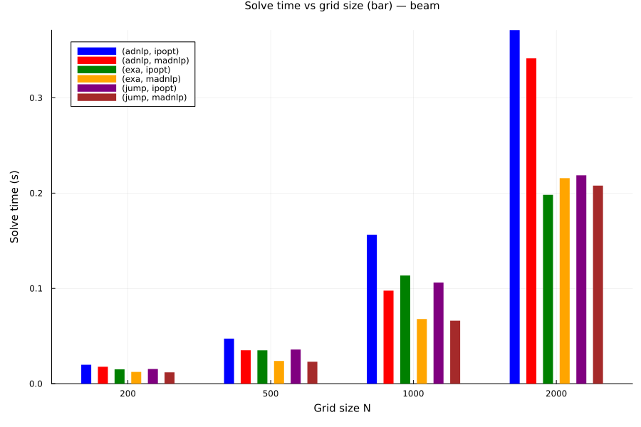
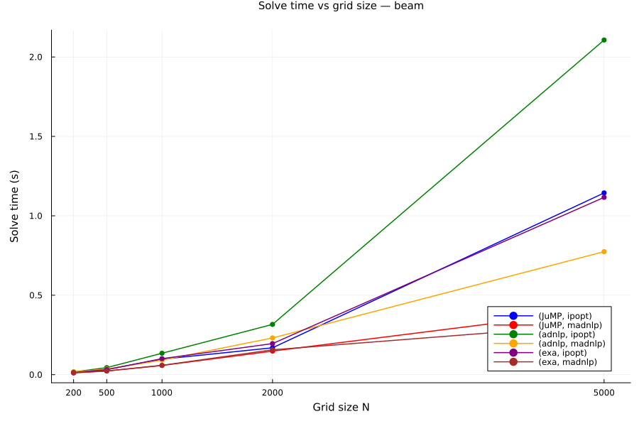
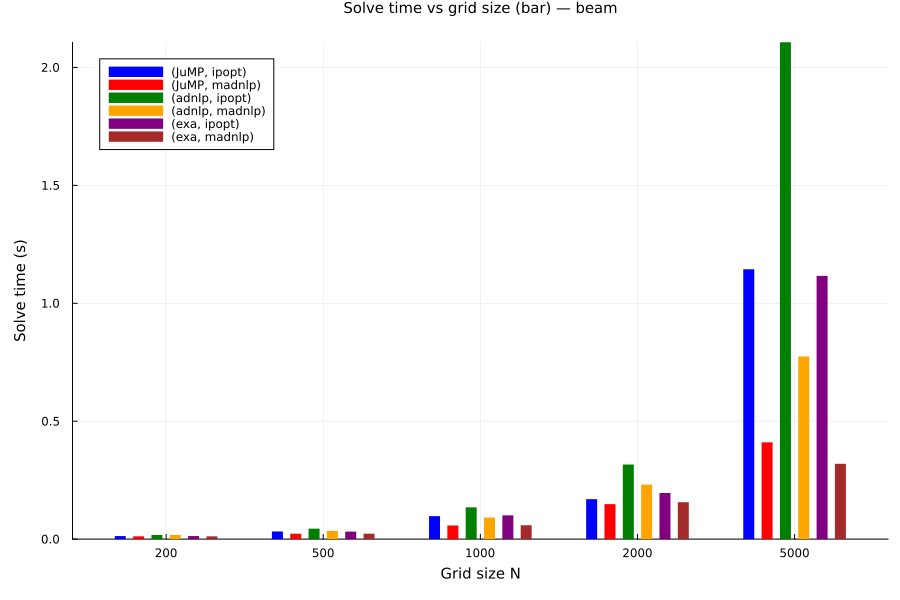
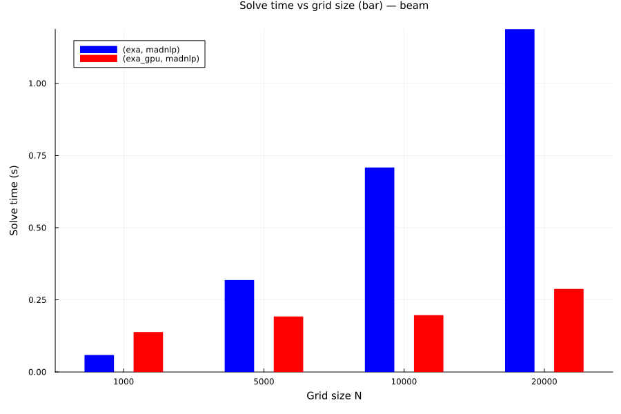
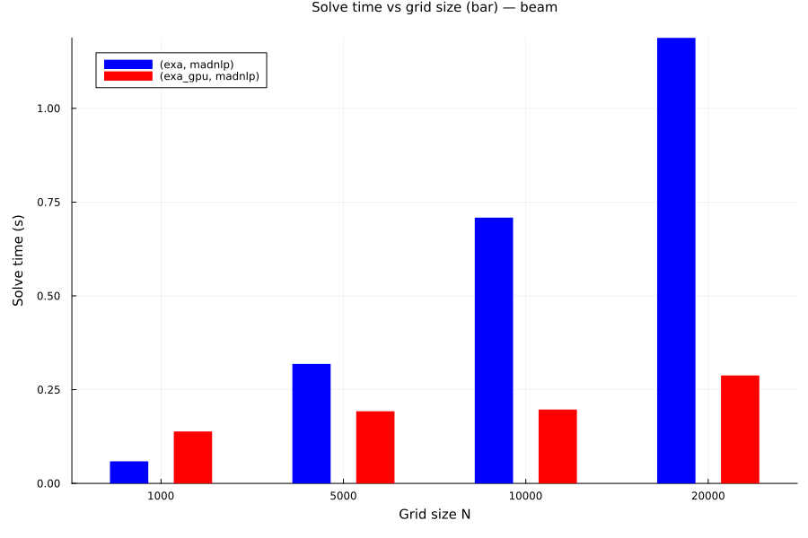

Core Beam Benchmark
This page presents benchmark results for the beam problem across different platforms and configurations.
Ubuntu Latest - CPU
Results for the beam problem on GitHub Actions runners (Ubuntu latest).
Benchmark Configuration:
Problems: beam, chain
Solvers: ipopt, madnlp
Models: adnlp, exa, jump
Grid sizes: 200, 500, 1000, 2000 discretization points
Discretization: trapeze method
Tolerance: 1.0e-8
Ipopt strategy: adaptive barrier parameter
Limits: 1000 iterations max, 500.0s wall time
This configuration focuses on CPU-based solvers and provides a comprehensive comparison across different modelling frameworks.
📊 Ubuntu Results
Benchmarks results:
┌─ Problem: beam
│
├──┬ Solver: ipopt, Discretization: trapeze
│ │
│ │ N = 200
│ │ ✓ | jump | time: 15.407 ms | iters: 16 | obj: 8.891335e+00 (min) | CPU: 16.38 KiB
│ │ ✓ | adnlp | time: 19.858 ms | iters: 16 | obj: 8.891335e+00 (min) | CPU: 2.37 MiB
│ │ ✓ | exa | time: 15.092 ms | iters: 16 | obj: 8.891335e+00 (min) | CPU: 72.48 KiB
│ │
│ │ N = 500
│ │ ✓ | jump | time: 35.838 ms | iters: 18 | obj: 8.889282e+00 (min) | CPU: 18.41 KiB
│ │ ✓ | adnlp | time: 47.319 ms | iters: 18 | obj: 8.889282e+00 (min) | CPU: 6.47 MiB
│ │ ✓ | exa | time: 34.979 ms | iters: 18 | obj: 8.889282e+00 (min) | CPU: 137.61 KiB
│ │
│ │ N = 1000
│ │ ✓ | jump | time: 106.130 ms | iters: 30 | obj: 8.888987e+00 (min) | CPU: 28.56 KiB
│ │ ✓ | adnlp | time: 156.330 ms | iters: 33 | obj: 8.888988e+00 (min) | CPU: 22.54 MiB
│ │ ✓ | exa | time: 113.521 ms | iters: 33 | obj: 8.888987e+00 (min) | CPU: 258.77 KiB
│ │
│ │ N = 2000
│ │ ✓ | jump | time: 218.687 ms | iters: 32 | obj: 8.888914e+00 (min) | CPU: 30.25 KiB
│ │ ✓ | adnlp | time: 371.059 ms | iters: 34 | obj: 8.888913e+00 (min) | CPU: 46.25 MiB
│ │ ✓ | exa | time: 198.227 ms | iters: 29 | obj: 8.888915e+00 (min) | CPU: 465.58 KiB
│ └─
│
├──┬ Solver: madnlp, Discretization: trapeze
│ │
│ │ N = 200
│ │ ✓ | jump | time: 11.892 ms | iters: 21 | obj: 8.891335e+00 (min) | CPU: 2.16 MiB
│ │ ✓ | adnlp | time: 17.753 ms | iters: 21 | obj: 8.891335e+00 (min) | CPU: 4.91 MiB
│ │ ✓ | exa | time: 12.343 ms | iters: 21 | obj: 8.891335e+00 (min) | CPU: 2.07 MiB
│ │
│ │ N = 500
│ │ ✓ | jump | time: 23.033 ms | iters: 18 | obj: 8.889282e+00 (min) | CPU: 4.22 MiB
│ │ ✓ | adnlp | time: 35.051 ms | iters: 18 | obj: 8.889282e+00 (min) | CPU: 10.13 MiB
│ │ ✓ | exa | time: 23.841 ms | iters: 18 | obj: 8.889282e+00 (min) | CPU: 4.06 MiB
│ │
│ │ N = 1000
│ │ ✓ | jump | time: 66.138 ms | iters: 28 | obj: 8.888987e+00 (min) | CPU: 10.25 MiB
│ │ ✓ | adnlp | time: 97.659 ms | iters: 26 | obj: 8.888987e+00 (min) | CPU: 26.56 MiB
│ │ ✓ | exa | time: 67.857 ms | iters: 28 | obj: 8.888987e+00 (min) | CPU: 9.78 MiB
│ │
│ │ N = 2000
│ │ ✓ | jump | time: 207.863 ms | iters: 39 | obj: 8.888914e+00 (min) | CPU: 24.93 MiB
│ │ ✓ | adnlp | time: 341.409 ms | iters: 40 | obj: 8.888914e+00 (min) | CPU: 76.33 MiB
│ │ ✓ | exa | time: 215.684 ms | iters: 37 | obj: 8.888913e+00 (min) | CPU: 22.69 MiB
│ └─
└─Moonshot - CPU
Results for the beam problem on self-hosted CPU hardware.
Benchmark Configuration:
⚠️ No configuration recorded in the benchmark file.
This configuration tests larger grid sizes on dedicated hardware, comparing performance with the GitHub Actions runner.
⚡ Moonshot CPU Results
Benchmarks results:
┌─ Problem: beam
│
├──┬ Solver: ipopt, Discretization: trapeze
│ │
│ │ N = 200
│ │ ✓ | JuMP | time: 13.000 ms | iters: 12 | obj: 8.891342e+00 (N/A) | CPU: 13.06 KiB
│ │ ✓ | adnlp | time: 17.482 ms | iters: 12 | obj: 8.891342e+00 (N/A) | CPU: 1.84 MiB
│ │ ✓ | exa | time: 13.068 ms | iters: 12 | obj: 8.891342e+00 (N/A) | CPU: 68.36 KiB
│ │
│ │ N = 500
│ │ ✓ | JuMP | time: 32.629 ms | iters: 15 | obj: 8.889302e+00 (N/A) | CPU: 15.88 KiB
│ │ ✓ | adnlp | time: 44.223 ms | iters: 15 | obj: 8.889302e+00 (N/A) | CPU: 5.50 MiB
│ │ ✓ | exa | time: 31.791 ms | iters: 15 | obj: 8.889302e+00 (N/A) | CPU: 134.52 KiB
│ │
│ │ N = 1000
│ │ ✓ | JuMP | time: 97.619 ms | iters: 25 | obj: 8.888998e+00 (N/A) | CPU: 24.34 KiB
│ │ ✓ | adnlp | time: 134.922 ms | iters: 26 | obj: 8.889037e+00 (N/A) | CPU: 18.03 MiB
│ │ ✓ | exa | time: 100.829 ms | iters: 26 | obj: 8.889132e+00 (N/A) | CPU: 251.55 KiB
│ │
│ │ N = 2000
│ │ ✓ | JuMP | time: 169.290 ms | iters: 22 | obj: 8.888994e+00 (N/A) | CPU: 21.81 KiB
│ │ ✓ | adnlp | time: 316.407 ms | iters: 28 | obj: 8.888933e+00 (N/A) | CPU: 38.54 MiB
│ │ ✓ | exa | time: 195.602 ms | iters: 23 | obj: 8.888927e+00 (N/A) | CPU: 459.39 KiB
│ │
│ │ N = 5000
│ │ ✓ | JuMP | time: 1.144 s | iters: 46 | obj: 8.888931e+00 (N/A) | CPU: 42.06 KiB
│ │ ✓ | adnlp | time: 2.107 s | iters: 54 | obj: 8.888917e+00 (N/A) | CPU: 179.59 MiB
│ │ ✓ | exa | time: 1.116 s | iters: 42 | obj: 8.888947e+00 (N/A) | CPU: 1.09 MiB
│ └─
│
├──┬ Solver: madnlp, Discretization: trapeze
│ │
│ │ N = 200
│ │ ✓ | JuMP | time: 11.758 ms | iters: 18 | obj: 8.891339e+00 (N/A) | CPU: 2.02 MiB
│ │ ✓ | adnlp | time: 17.531 ms | iters: 18 | obj: 8.891339e+00 (N/A) | CPU: 4.38 MiB
│ │ ✓ | exa | time: 11.773 ms | iters: 18 | obj: 8.891339e+00 (N/A) | CPU: 1.93 MiB
│ │
│ │ N = 500
│ │ ✓ | JuMP | time: 22.976 ms | iters: 16 | obj: 8.889296e+00 (N/A) | CPU: 4.00 MiB
│ │ ✓ | adnlp | time: 35.162 ms | iters: 16 | obj: 8.889296e+00 (N/A) | CPU: 9.26 MiB
│ │ ✓ | exa | time: 23.182 ms | iters: 16 | obj: 8.889296e+00 (N/A) | CPU: 3.84 MiB
│ │
│ │ N = 1000
│ │ ✓ | JuMP | time: 58.029 ms | iters: 22 | obj: 8.889006e+00 (N/A) | CPU: 8.93 MiB
│ │ ✓ | adnlp | time: 91.517 ms | iters: 22 | obj: 8.889005e+00 (N/A) | CPU: 23.14 MiB
│ │ ✓ | exa | time: 58.839 ms | iters: 22 | obj: 8.889006e+00 (N/A) | CPU: 8.45 MiB
│ │
│ │ N = 2000
│ │ ✓ | JuMP | time: 148.340 ms | iters: 24 | obj: 8.888951e+00 (N/A) | CPU: 18.68 MiB
│ │ ✓ | adnlp | time: 231.252 ms | iters: 23 | obj: 8.888951e+00 (N/A) | CPU: 47.39 MiB
│ │ ✓ | exa | time: 156.524 ms | iters: 22 | obj: 8.888951e+00 (N/A) | CPU: 16.35 MiB
│ │
│ │ N = 5000
│ │ ✓ | JuMP | time: 410.492 ms | iters: 26 | obj: 8.888990e+00 (N/A) | CPU: 49.01 MiB
│ │ ✓ | adnlp | time: 774.357 ms | iters: 25 | obj: 8.888990e+00 (N/A) | CPU: 126.05 MiB
│ │ ✓ | exa | time: 319.383 ms | iters: 17 | obj: 8.888990e+00 (N/A) | CPU: 34.86 MiB
│ └─
└─Moonshot - GPU
Results for the beam problem on GPU-accelerated hardware.
Benchmark Configuration:
⚠️ No configuration recorded in the benchmark file.
This configuration demonstrates GPU acceleration capabilities with ExaModels on large-scale problems, comparing CPU vs GPU performance for the same modelling framework.
🚀 Moonshot GPU Results
 
Benchmarks results:
┌─ Problem: beam
│
├──┬ Solver: madnlp, Discretization: trapeze
│ │
│ │ N = 1000
│ │ ✓ | exa | time: 58.925 ms | iters: 22 | obj: 8.889006e+00 (N/A) | CPU: 8.45 MiB
│ │ ✓ | exa_gpu | time: 138.457 ms | iters: 25 | obj: 8.827707e+00 (N/A) | CPU: 9.171 MiB | GPU: 11.901 MiB
│ │
│ │ N = 5000
│ │ ✓ | exa | time: 318.570 ms | iters: 17 | obj: 8.888990e+00 (N/A) | CPU: 34.86 MiB
│ │ ✓ | exa_gpu | time: 192.284 ms | iters: 31 | obj: 8.586481e+00 (N/A) | CPU: 12.993 MiB | GPU: 61.717 MiB
│ │
│ │ N = 10000
│ │ ✓ | exa | time: 708.552 ms | iters: 18 | obj: 8.889088e+00 (N/A) | CPU: 71.26 MiB
│ │ ✓ | exa_gpu | time: 196.904 ms | iters: 22 | obj: 8.291850e+00 (N/A) | CPU: 12.801 MiB | GPU: 116.519 MiB
│ │
│ │ N = 20000
│ │ ✓ | exa | time: 1.188 s | iters: 13 | obj: 8.889279e+00 (N/A) | CPU: 121.36 MiB
│ │ ✓ | exa_gpu | time: 287.797 ms | iters: 20 | obj: 7.725138e+00 (N/A) | CPU: 17.206 MiB | GPU: 229.899 MiB
│ └─
└─